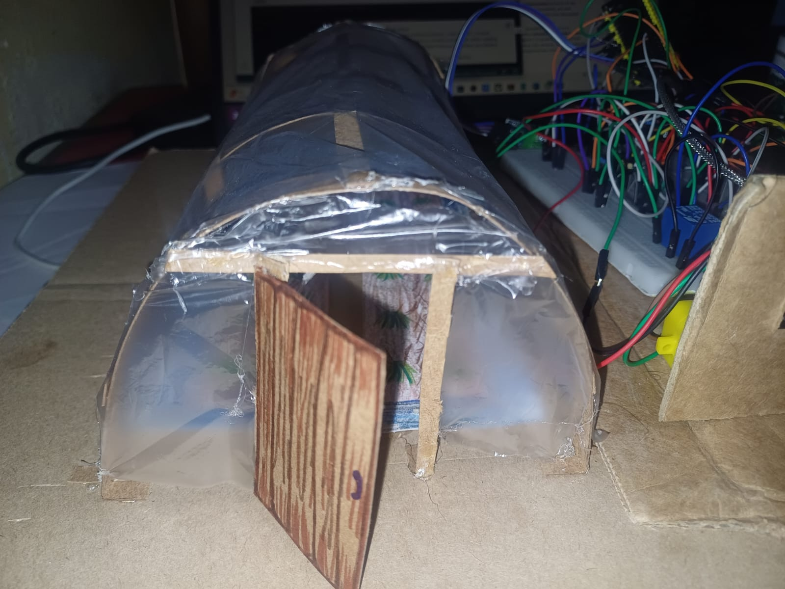
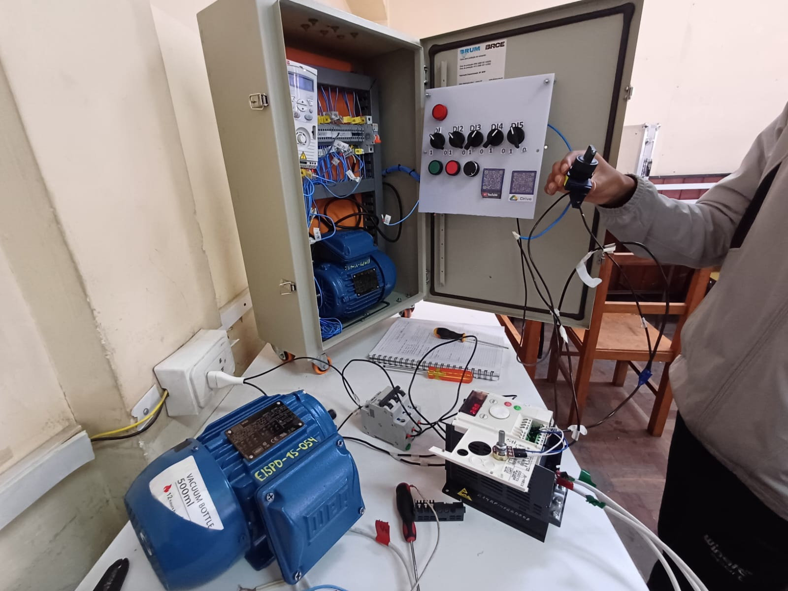
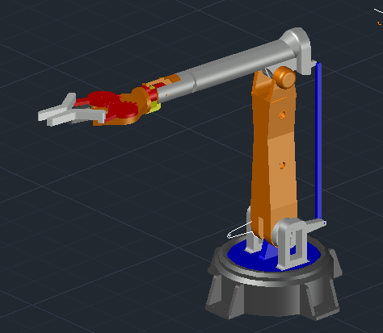

Facultad de Ingeniería UMSA
Ver Proyectos ContactarSoy un apasionado de la tecnología en la UMSA en La Paz.
Mi formación combina lo mejor de dos mundos: la lógica de la programación y el control del hardware. Programación de microcontroladores y desarrollo web orientado a la industria.
C++, Python, Java, HTML/CSS, JavaScript.
PLC (Siemens, Omron), Arduino, ESP32, Sensores y Actuadores.
Configuración LAN/WAN, Cisco Packet Tracer, Linux, Windows.

Control automatizado de riego utilizando Arduino y sensores de humedad, monitoreado vía App móvil.

Sistema de control de frecuencia de un motor en delta estrella.

Diseño de brazo robótico en AutoCAD para selección de objetos.
Publicaciones, investigaciones y documentación técnica desarrollada durante mi formación.
Aplicación de conceptos de POO (clases, encapsulamiento y herencia) para estructurar la lectura, procesamiento y filtrado de datos de voltaje continuo en tiempo real mediante sensores e interfaz.
Implementación de un paradigma de software orientado a objetos para la adquisición, acondicionamiento y procesamiento de lecturas de corriente continua (C.C.) empleando una resistencia Shunt como elemento primario de medición.
Análisis teórico y experimental del comportamiento del Efecto Hall aplicado al diseño y calibración de sensores para la detección de campos magnéticos y medición de corriente sin contacto físico directo.